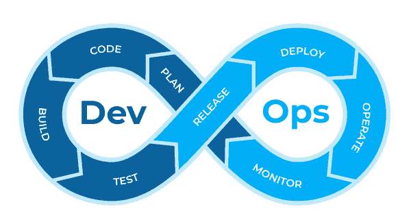
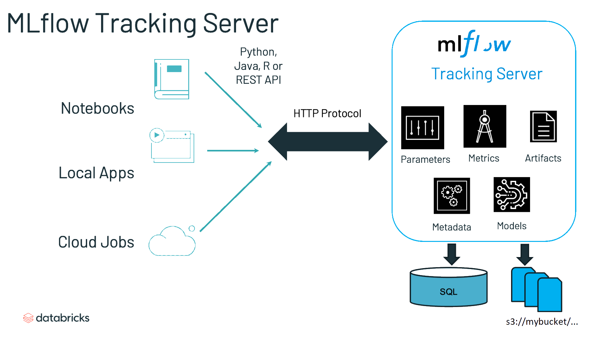
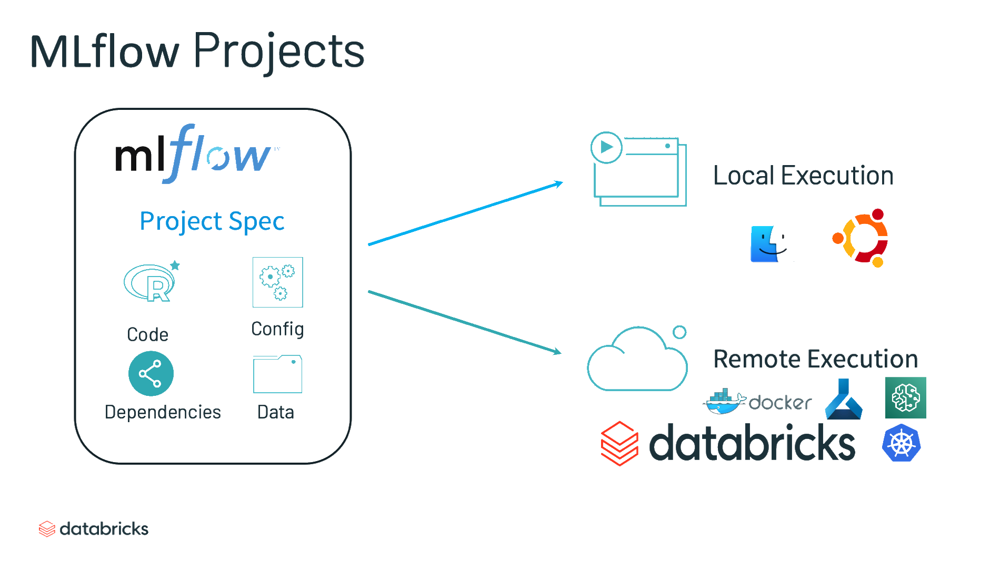

An introduction to MLOps with MLflow
Romain Avouac (Insee), Thomas Faria (Insee), Tom Seimandi (Insee)
Introduction
Who are we ?
- Data scientists at Insee
- methodological and IT innovation teams
- support data science projects
- Contact us
Context
Difficulty of transitioning from experiments to production-grade machine learning systems
Leverage best practices from software engineering
- Improve reproducibility of analysis
- Deploy applications in a scalable way
The DevOps approach
- Unify development (dev) and system administration (ops)
- shorten development time
- maintain software quality

The MLOps approach
- Integrate the specificities of machine learning projects
- Experimentation
- Continuous improvement

MLOps : principles
Reproducibility
Versioning
Automation
Monitoring
Collaboration
Why MLflow ?
Multiple frameworks implement the MLOps principles
Pros of
MLflow- Open-source
- Covers the whole ML lifecycle
- Agnostic to the ML library used
- We have experience with it
Training platform : the SSP Cloud
- An open innovation production-like environment
- Kubernetes cluster
- S3-compatible object storage
- Large computational resources (including GPUs)
- Based on the Onyxia project
- User-friendly interface to launch data science services
- A catalog of services which covers the full lifecycle of data science projects
Outline
1️⃣ Introduction to MLFlow
2️⃣ Deploying a model as an API
3️⃣ Distributing the hyperparameter optimization
Application 0
Preparation of the working environment
- Create an account on the SSP Cloud using your professional mail address
- Launch a
MLflowservice by clicking this URL - Launch a
VSCodeservice by clicking this URL - Open the
VSCodeservice and input the service password (either automatically copied or available in theREADMEof the service) - You’re all set !
Introduction to MLFlow
Tracking server
- “An API and UI for logging parameters, code versions, metrics, and artifacts”

Projects
- “A standard format for packaging reusable data science code”

Models
- “A convention for packaging machine learning models in multiple flavors”

Model registry
- “A centralized model store, set of APIs, and UI, to collaboratively manage the full lifecycle of an MLflow Model”

Application 1
Introduction to MLflow concepts
- In
VSCode, open the notebookmlflow-introduction.ipynb(from thenotebooksdirectory) - Choose our custom
Pythonkernel :Select Kernel -> Python environments... -> base (Python 3.x.x)
- Execute the notebook cell by cell. Try to understand carefully how the
Pythonsession interacts with theMLflowAPI. Explore theMLflowUI and try to build your own experiments from the example code provided in the notebook.
A Practical Example: NACE Code Prediction for French Companies
Context
NACE
- European standard classification of productive economic activities
- Hierarchical structure with 4 levels and 615 codes
At Insee previously handled by an outdated rule-based algorithm
Common problematic to all National statistical institutes
Data used
- A simple use-case with only 2 variables:
- Textual description of the activity – text
- True NACE code labelised by the rule-based engine – nace (732 modalities)
- Standard preprocessing:
- lowercasing
- punctuation removal
- number removal
- stopwords removal
- stemming
- …
MLflow with a non standard framework
- Easy to use with a variety of machine learning frameworks (scikit-learn, Keras, Pytorch…)
- Need for more flexibility or need own framework
- Possibility to track , register and deliver your own model
MLflow with a non standard framework
- There are 2 main differences when using your own framework:
- logging of parameters, metrics and artifacts
- [wrapping] your custom model so that MLflow can serve it
# define a custom model
class MyModel(mlflow.pyfunc.PythonModel):
def load_context(self, context):
self.my_model.load_model(context.artifacts["my_model"])
def predict(self, context, model_input):
return self.my_model.predict(model_input)#| cache: false
import sys
sys.path.append("../src/")
import pandas as pd
from constants import TEXT_FEATURE
from preprocessor import Preprocessor
preprocessor = Preprocessor()
df = pd.read_parquet("../firm_activity_data.parquet")
df = df.sample(frac=0.001, random_state=0)
df_prepro = preprocessor.clean_text(df, TEXT_FEATURE)
ojs_define(data_raw = df, data_prepro = df_prepro)Application 2
:::{.callout-tip collapse=“true” icon=false} ## From notebook to python scripts
:::{.nonincremental}
- All scripts related to our custom model are stored in the
srcfolder. Check them out. - Run a training of the model using MLflow. To do so:
- Create a
mlflow-run.shempty file at the root of the project - Change it permissions by running
chmod 777 mlflow-run.shin the terminal - Add the following content to
mlflow-run.sh:
#! /bin/bash # Set MLFLOW_TRACKING_URI environment variable export MLFLOW_TRACKING_URI="https://projet-ape-543061.user.lab.sspcloud.fr" mlflow run ~/work/codification-ape/ --env-manager=local \ -P remote_server_uri=$MLFLOW_TRACKING_URI \ -P experiment_name=$MLFLOW_EXPERIMENT_NAME \ -P data_path=$DATA_PATH \ -P config_path=$CONFIG_PATH- Execute
./mlflow-run.shin the terminal
- Create a
- Open the MLFlow interface
Distributing the hyperparameter optimization
Application 3
Deploying a machine-learning model as an API
Deploying a model as an API
Application 4
Distributing the hyperparameter optimization with an orchestrator
Conclusion
An introduction to MLOps with MLflow